ANTES
ANTES DESPUÉS
DESPUÉSLlantera multinacional · Reconstrucción
Reconstrucción de máquina de armado
Desarmado completo, reparación mecánica, recableado y pintura. La máquina regresó a producción.
Diseño, fabricación, automatización y reconstrucción para plantas que no pueden parar. Por confidencialidad no publicamos el nombre del cliente en cada caso.

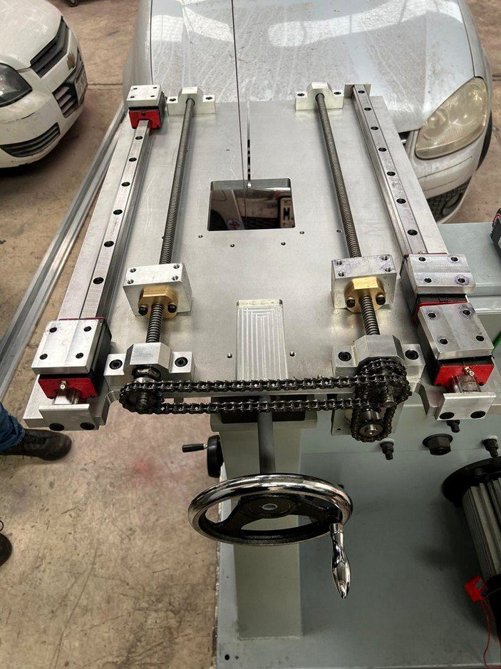
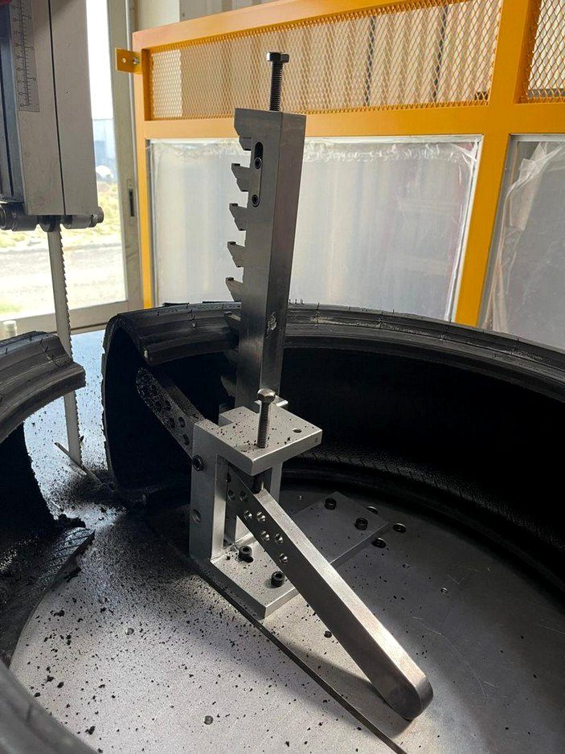
El operador trabajaba demasiado cerca de la cuchilla en movimiento y las llantas de prueba podían salir proyectadas durante el corte. Había que sacarlo de la zona de peligro y ampliar la capacidad de corte sin comprometer la estructura original de la máquina.
Darle al operador una estación ergonómica para hacer la inspección final de calidad de la llanta terminada.
Prueba funcional en nuestro taller con el ingeniero del cliente presente y validación remota desde Canadá. Las dos máquinas se aprobaron a la primera y salieron embaladas, con placas de datos en inglés técnico.


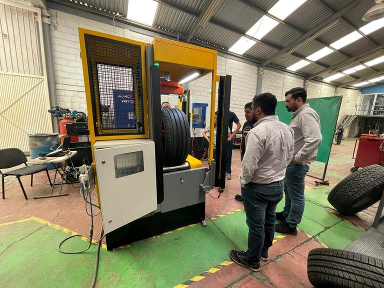

El cliente tenía una máquina vieja que prensaba la espuma para sus llantas. Necesitaba renovarla y automatizarla.
Desde la primera, el cliente nos ha pedido varias más. Cada prensa se prueba en nuestro taller antes de regresar a planta y todas se aprobaron a la primera.
ANTESDESPUÉSDesarmado completo, reparación mecánica, recableado y pintura. La máquina regresó a producción.
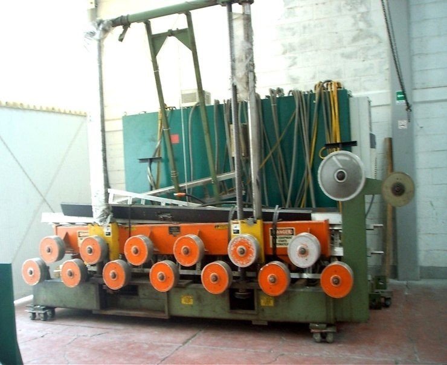
ANTES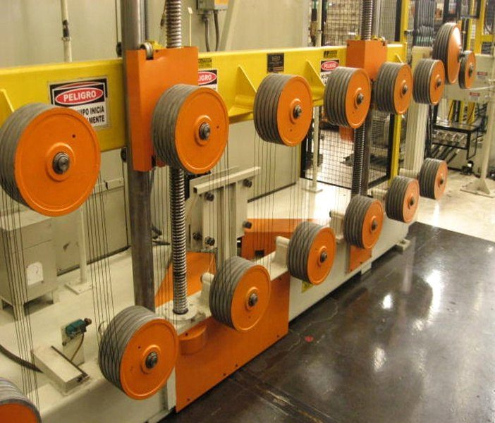
DESPUÉSReconstrucción mecánica, eléctrica y de pintura del equipo completo.
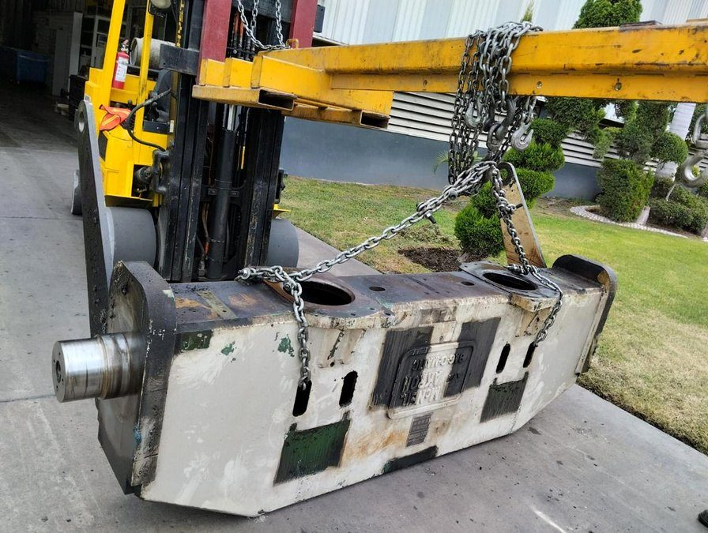
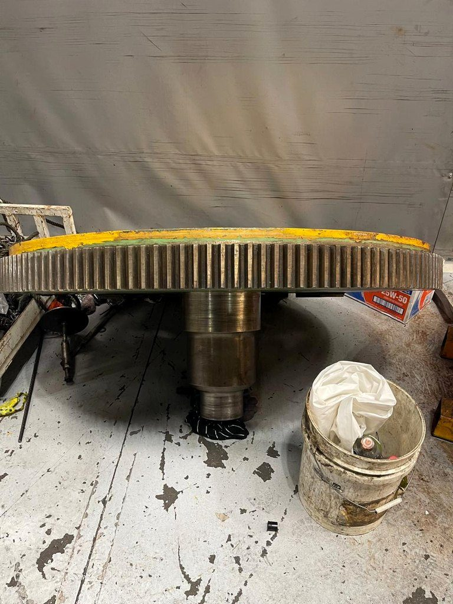
Desmontaje, maniobra y reparación de componentes pesados: bastidores, flechas y engranes de gran diámetro.
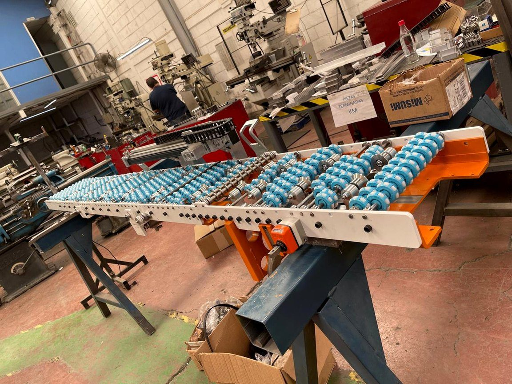
Ensambles de transportadores fabricados, probados y embalados en nuestro taller para una planta en Norteamérica.
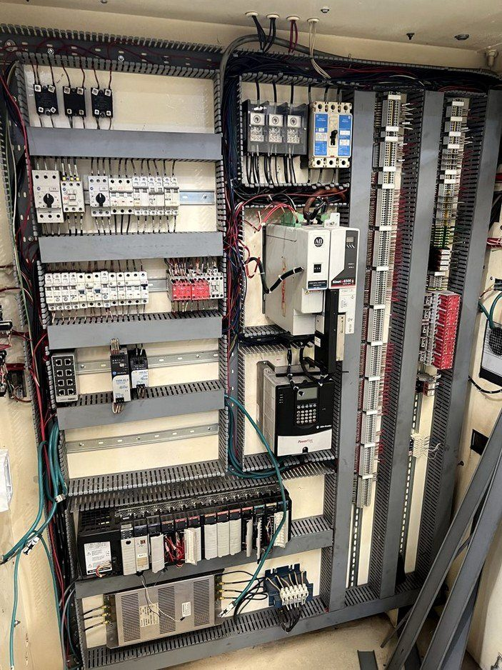
Desenergizado, desmontaje y separación de componentes de máquinas de primera y segunda etapa, con una cuadrilla de unas 10 personas.

Transportador de banda con estructura abatible, diseñado y fabricado en nuestro taller.
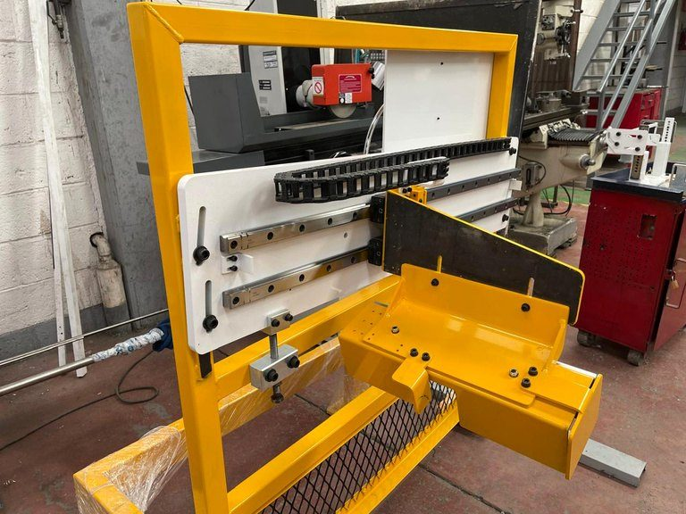
Mecanismo con guías lineales, portacables y estructura de seguridad para línea de llanta.
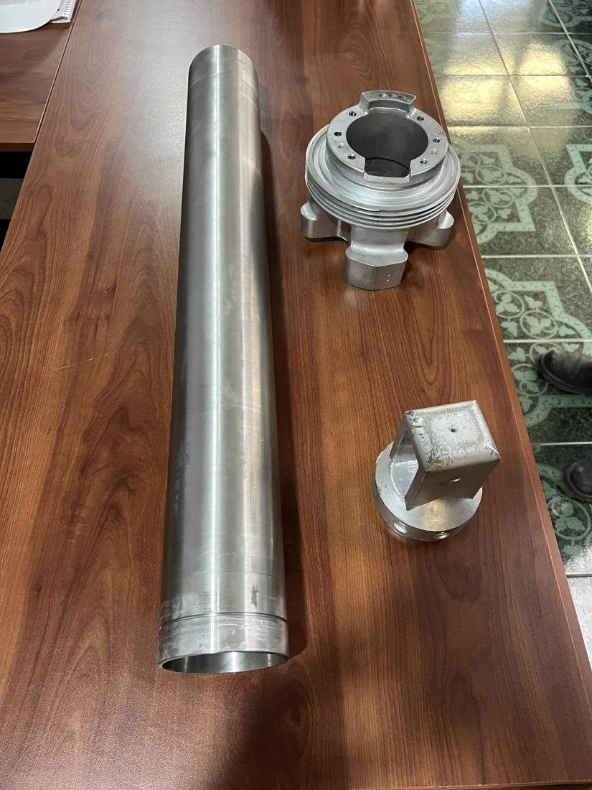
Actuador para la membrana de una prensa que trabaja con vapor. Barril y tapas maquinados y bruñidos en acero inoxidable.
Mándenos fotos o planos por WhatsApp y le contestamos en menos de 24 horas.